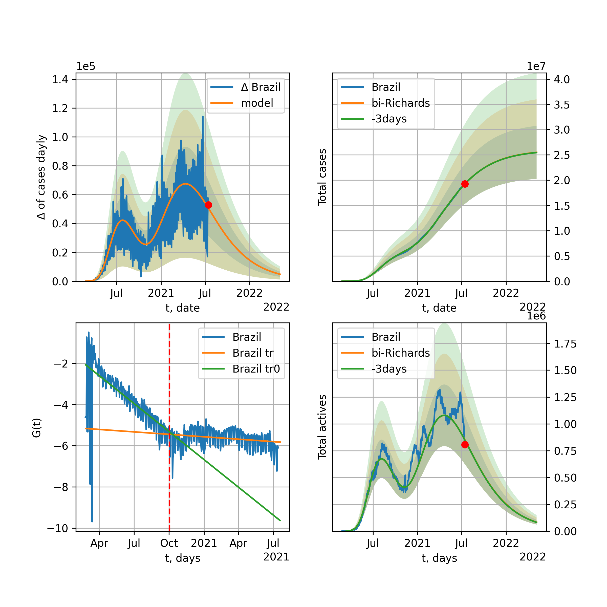

Multi-logistic model of COVID-19 dynamics
Model, code, results
Project maintained by algmaknick Hosted on GitHub Pages — Theme by mattgraham
World

World data at: 2020-06-21
+3 day model MAPE: 0.011405
model: bi-Richards
coeffs: [ 1.18989990e+07 1.68612022e+00 -4.05110341e+01 1.76038876e-02]
S.Korea scenario coeffs: [0.36242246, 2.56241634, 1.84890887, 0.13324732]
rational stdev: 0.082443
forecast at the end of period: +545 days
deltaDaycases: 9975
total cases: 20163469 ± 1662343
total death: 1048769 ± 259392
bi-Richards approximation splitting point: 50
trend coefficient of determination: 0.842555
intercept: -2.324757
slope: -0.033574
trend coefficient of determination: 0.392189
intercept: -3.768659
slope: -0.006386
European Union

European Union data at: 2020-06-21
+3 day model MAPE: 0.003786
model: bi-Richards
coeffs: [ 2.31552799e+05 4.39753488e+00 -3.40538384e+01 9.20810694e-03]
rational stdev: 0.588027
forecast at the end of period: +27 days
deltaDaycases: 1075
total cases: 1286380 ± 756426
total death: 136343 ± 240520
bi-Richards approximation splitting point: 83
trend coefficient of determination: 0.943420
intercept: -1.112657
slope: -0.057408
trend coefficient of determination: 0.037980
intercept: -5.283747
slope: -0.006203
Brazil

Brazil data at: 2020-06-21
+3 day model MAPE: 0.027228
model: Richards
coeffs: [2.21157680e+06 8.60166237e-02 7.55908059e+01 5.13901826e-01]
S.Korea scenario coeffs: [0.36242246, 2.56241634, 1.84890887, 0.13324732]
rational stdev: 0.289541
forecast at the end of period: +475 days
deltaDaycases: 266
total cases: 2995334 ± 867271
total death: 139597 ± 121257
trend coefficient of determination: 0.782484
intercept: -5.488287
slope: -0.056410
Russia

Russia data at: 2020-06-21
+3 day model MAPE: 0.009859
model: Richards
coeffs: [ 7.54929365e+05 2.30194802e+00 -5.95197282e+01 1.62491626e-02]
S.Korea scenario coeffs: [0.36242246, 2.56241634, 1.84890887, 0.13324732]
rational stdev: 0.090690
forecast at the end of period: +545 days
deltaDaycases: 123
total cases: 1018780 ± 92393
total death: 14133 ± 3845
trend coefficient of determination: 0.970224
intercept: -1.541993
slope: -0.033721
USA

USA data at: 2020-06-21
+3 day model MAPE: 0.013505
model: bi-Richards
coeffs: [ 1.59458897e+06 2.36445035e+00 -3.44001120e+01 1.43983355e-02]
rational stdev: 0.180154
forecast at the end of period: +139 days
deltaDaycases: 370
total cases: 3197198 ± 575988
total death: 165845 ± 89633
bi-Richards approximation splitting point: 65
trend coefficient of determination: 0.953379
intercept: -1.144875
slope: -0.051271
trend coefficient of determination: 0.387940
intercept: -3.766041
slope: -0.009641
Spain

Spain data at: 2020-06-21
+3 day model MAPE: 0.000000
model: bi-Richards
coeffs: [-2.19388829e+03 4.14954905e+00 6.21265672e+01 2.36148390e-03]
rational stdev: 0.229973
forecast at the end of period: +41 days
deltaDaycases: 11
total cases: 292654 ± 67302
total death: 28255 ± 19493
bi-Richards approximation splitting point: 100
trend coefficient of determination: 0.959522
intercept: -0.646964
slope: -0.061451
trend coefficient of determination: 0.074875
intercept: -8.966273
slope: 0.019576
Italy

Italy data at: 2020-06-21
+3 day model MAPE: 0.000000
model: bi-Richards
coeffs: [-4.55063712e+02 -7.67908687e+00 6.00127032e+01 3.34876810e-01]
S.Korea scenario coeffs: [0.36242246, 2.56241634, 1.84890887, 0.13324732]
rational stdev: 0.895795
forecast at the end of period: +27 days
deltaDaycases: 18
total cases: 236154 ± 211545
total death: 34293 ± 92158
bi-Richards approximation splitting point: 100
trend coefficient of determination: 0.973204
intercept: -3.895332
slope: -0.073388
trend coefficient of determination: 0.006157
intercept: -10.469782
slope: -0.004020
United Kingdom

United Kingdom data at: 2020-06-21
+3 day model MAPE: 0.001699
model: Richards
coeffs: [ 3.19352267e+05 3.79529538e+00 -6.26229278e+01 1.20922562e-02]
S.Korea scenario coeffs: [0.36242246, 2.56241634, 1.84890887, 0.13324732]
rational stdev: 0.144635
forecast at the end of period: +335 days
deltaDaycases: 191
total cases: 422213 ± 61066
total death: 59145 ± 25663
trend coefficient of determination: 0.974364
intercept: -1.429069
slope: -0.044274
France

France data at: 2020-06-21
+3 day model MAPE: 0.003279
model: bi-Richards
coeffs: [2.23065555e+04 5.69366047e+00 1.88808834e+01 1.17415461e-02]
rational stdev: 0.184459
forecast at the end of period: +27 days
deltaDaycases: 65
total cases: 164186 ± 30285
total death: 30344 ± 16791
bi-Richards approximation splitting point: 82
trend coefficient of determination: 0.893484
intercept: -0.859057
slope: -0.068423
trend coefficient of determination: 0.027347
intercept: -7.263391
slope: 0.012014
Germany

Germany data at: 2020-06-21
+3 day model MAPE: 0.006296
model: bi-Richards
coeffs: [ 1.48198405e+04 1.08682312e+01 -1.72032433e-01 6.03992973e-03]
rational stdev: 0.136333
forecast at the end of period: +41 days
deltaDaycases: 18
total cases: 193659 ± 26402
total death: 9059 ± 3705
bi-Richards approximation splitting point: 94
trend coefficient of determination: 0.950734
intercept: -1.420269
slope: -0.061113
trend coefficient of determination: 0.376268
intercept: -15.900688
slope: 0.096492
Turkey

Turkey data at: 2020-06-21
+3 day model MAPE: 0.005931
model: bi-Richards
coeffs: [ 7.75764195e+04 3.82300922e+00 -1.51063697e+01 1.06562850e-02]
rational stdev: 0.204641
forecast at the end of period: +41 days
deltaDaycases: 527
total cases: 224769 ± 45997
total death: 5928 ± 3639
bi-Richards approximation splitting point: 75
trend coefficient of determination: 0.778376
intercept: -0.974145
slope: -0.058082
trend coefficient of determination: 0.186521
intercept: -6.006345
slope: 0.009158
Iran

Iran data at: 2020-06-21
+3 day model MAPE: 0.006251
model: bi-Richards
coeffs: [1.56370267e+05 3.24220206e+00 2.19204800e+00 1.39450384e-02]
S.Korea scenario coeffs: [0.36242246, 2.56241634, 1.84890887, 0.13324732]
rational stdev: 0.271592
forecast at the end of period: +419 days
deltaDaycases: 114
total cases: 307595 ± 83540
total death: 14442 ± 11767
bi-Richards approximation splitting point: 75
trend coefficient of determination: 0.949244
intercept: -0.929794
slope: -0.055373
trend coefficient of determination: 0.163711
intercept: -3.893141
slope: -0.004858
Canada

Canada data at: 2020-06-21
+3 day model MAPE: 0.000490
model: Richards
coeffs: [ 1.09991348e+05 2.99116968e+00 -6.95225372e+01 1.41351644e-02]
S.Korea scenario coeffs: [0.36242246, 2.56241634, 1.84890887, 0.13324732]
rational stdev: 0.162256
forecast at the end of period: +420 days
deltaDaycases: 28
total cases: 147837 ± 23987
total death: 12298 ± 5986
trend coefficient of determination: 0.980490
intercept: -1.586861
slope: -0.044293
South Africa

South Africa data at: 2020-06-21
+3 day model MAPE: 0.001617
model: bi-Richards
coeffs: [3.57043275e+06 1.06215191e-01 8.92343264e+01 1.66457362e-01]
rational stdev: 0.273681
forecast at the end of period: +433 days
deltaDaycases: 149
total cases: 3563488 ± 975259
total death: 70682 ± 58032
bi-Richards approximation splitting point: 30
trend coefficient of determination: 0.539222
intercept: -1.249774
slope: -0.112020
trend coefficient of determination: 0.206956
intercept: -4.125137
slope: -0.006558
Belgium

Belgium data at: 2020-06-20
+3 day model MAPE: 0.001869
model: Richards
coeffs: [ 6.00974381e+04 6.16103581e+00 -4.54238128e+01 1.06328037e-02]
S.Korea scenario coeffs: [0.36242246, 2.56241634, 1.84890887, 0.13324732]
rational stdev: 0.510442
forecast at the end of period: +252 days
deltaDaycases: 20
total cases: 80962 ± 41326
total death: 12964 ± 19852
trend coefficient of determination: 0.959073
intercept: -1.301727
slope: -0.055303
Peru

Peru data at: 2020-06-21
+3 day model MAPE: 0.014692
model: Richards
coeffs: [3.96793668e+05 1.36132631e-01 4.60856121e+01 2.87225396e-01]
S.Korea scenario coeffs: [0.36242246, 2.56241634, 1.84890887, 0.13324732]
rational stdev: 0.335265
forecast at the end of period: +755 days
deltaDaycases: 1
total cases: 540467 ± 181200
total death: 17055 ± 17153
trend coefficient of determination: 0.898484
intercept: -2.814635
slope: -0.050630
Netherlands

Netherlands data at: 2020-06-21
+3 day model MAPE: 0.001310
model: bi-Richards
coeffs: [4.87536457e+03 5.05164682e+00 4.03588229e+01 1.59997109e-02]
rational stdev: 0.132973
forecast at the end of period: +27 days
deltaDaycases: 16
total cases: 51005 ± 6782
total death: 6263 ± 2498
bi-Richards approximation splitting point: 75
trend coefficient of determination: 0.961686
intercept: -0.852948
slope: -0.062519
trend coefficient of determination: 0.222194
intercept: -4.644975
slope: -0.013255
India

India data at: 2020-06-21
+3 day model MAPE: 0.006667
model: Richards
coeffs: [ 3.61903908e+06 2.79465845e-01 -1.98649818e+01 5.79466703e-02]
S.Korea scenario coeffs: [0.36242246, 2.56241634, 1.84890887, 0.13324732]
rational stdev: 0.364208
forecast at the end of period: +1035 days
deltaDaycases: 1157
total cases: 4700094 ± 1711811
total death: 150864 ± 164837
trend coefficient of determination: 0.715198
intercept: -1.939265
slope: -0.021390
Switzerland

Switzerland data at: 2020-06-21
+3 day model MAPE: 0.001650
model: bi-Richards
coeffs: [ 1.08642827e+03 8.00892041e+00 -5.82746343e+01 4.76452113e-03]
rational stdev: 0.353586
forecast at the end of period: +41 days
deltaDaycases: 4
total cases: 31554 ± 11157
total death: 1972 ± 2091
bi-Richards approximation splitting point: 80
trend coefficient of determination: 0.962245
intercept: -1.037125
slope: -0.084958
trend coefficient of determination: 0.068809
intercept: -9.334814
slope: 0.019442
Ecuador

Ecuador data at: 2020-06-21
+3 day model MAPE: 0.009838
model: Richards
coeffs: [ 5.99316180e+04 2.11939043e+00 -7.56306944e+01 1.51293986e-02]
S.Korea scenario coeffs: [0.36242246, 2.56241634, 1.84890887, 0.13324732]
rational stdev: 0.341629
forecast at the end of period: +615 days
deltaDaycases: 9
total cases: 80790 ± 27600
total death: 6737 ± 6904
trend coefficient of determination: 0.211158
intercept: -2.182249
slope: -0.034399
Portugal

Portugal data at: 2020-06-21
+3 day model MAPE: 0.003248
model: bi-Richards
coeffs: [ 2.73986408e+04 1.67713678e+00 -3.60516555e+01 1.87382627e-02]
rational stdev: 0.053887
forecast at the end of period: +195 days
deltaDaycases: 1
total cases: 55505 ± 2991
total death: 2170 ± 350
bi-Richards approximation splitting point: 61
trend coefficient of determination: 0.904509
intercept: -1.203991
slope: -0.070345
trend coefficient of determination: 0.063432
intercept: -5.378251
slope: 0.004745
Saudi Arabia

Saudi Arabia data at: 2020-06-21
+3 day model MAPE: 0.034776
model: Richards
coeffs: [ 4.64320107e+05 1.40544233e+00 -1.12721306e+02 1.37955681e-02]
S.Korea scenario coeffs: [0.36242246, 2.56241634, 1.84890887, 0.13324732]
rational stdev: 0.294511
forecast at the end of period: +433 days
deltaDaycases: 85
total cases: 467439 ± 137665
total death: 3757 ± 3319
trend coefficient of determination: 0.220386
intercept: -2.069618
slope: -0.016601
Sweden

Sweden data at: 2020-06-21
+3 day model MAPE: 0.032407
model: bi-Richards
coeffs: [1.97016978e+04 1.38989308e-01 1.00179738e+02 1.04762718e+00]
rational stdev: 0.235696
forecast at the end of period: +90 days
deltaDaycases: 8
total cases: 66785 ± 15741
total death: 6021 ± 4257
bi-Richards approximation splitting point: 80
trend coefficient of determination: 0.858187
intercept: -5.959963
slope: -0.131720
trend coefficient of determination: 0.223089
intercept: -12.417004
slope: -0.030451
Pakistan

Pakistan data at: 2020-06-21
+3 day model MAPE: 0.018764
model: bi-logisticQ
coeffs: [ 5.53630373e+05 5.65992732e-06 1.19776420e+02 -9.51636066e+03]
S.Korea scenario coeffs: [0.35416971, 0.02606324, 4.35859408, 19.30413219]
rational stdev: 0.385998
forecast at the end of period: +629 days
deltaDaycases: 15
total cases: 749440 ± 289282
total death: 14857 ± 17204
bi-logisticQ approximation splitting point: 20
trend coefficient of determination: 0.391568
intercept_: -3.9808806978581046
coeffs_: [ 0. -0.04620278 -0.00453428]
trend coefficient of determination: 0.963119
intercept_: -5.8171662371924056
coeffs_: [ 0. -0.14526263 0.00055276]
Pakistan

Pakistan data at: 2020-06-21
+3 day model MAPE: 0.018322
model: Richards
coeffs: [8.08222735e+06 9.06648024e-02 8.57643764e+01 1.48489242e-01]
S.Korea scenario coeffs: [0.36242246, 2.56241634, 1.84890887, 0.13324732]
rational stdev: 0.370707
forecast at the end of period: +1735 days
deltaDaycases: 290
total cases: 10947597 ± 4058355
total death: 217031 ± 241365
trend coefficient of determination: 0.631850
intercept: -2.672141
slope: -0.024240
Ireland

Ireland data at: 2020-06-21
+3 day model MAPE: 0.001573
model: logisticQ
coeffs: [ 2.49718909e+04 8.83036706e-07 3.61043865e+01 -1.33723143e+05]
S.Korea scenario coeffs: [0.35416971, 0.02606324, 4.35859408, 19.30413219]
rational stdev: 0.292170
forecast at the end of period: +97 days
deltaDaycases: 38
total cases: 33128 ± 9679
total death: 2238 ± 1961
trend coefficient of determination: 0.979040
intercept_: -4.331595142386146
coeffs_: [ 0. -0.2260544 0.00094227]
Mexico

Mexico data at: 2020-06-21
+3 day model MAPE: 0.005453
model: Richards
coeffs: [ 7.89068466e+05 5.10322794e-01 -6.89907583e+01 3.63546113e-02]
S.Korea scenario coeffs: [0.36242246, 2.56241634, 1.84890887, 0.13324732]
rational stdev: 0.186698
forecast at the end of period: +895 days
deltaDaycases: 276
total cases: 1027250 ± 191785
total death: 124178 ± 69551
trend coefficient of determination: 0.903686
intercept: -2.059206
slope: -0.022642
Singapore

Singapore data at: 2020-06-21
+3 day model MAPE: 0.007512
model: bi-Richards
coeffs: [ 3.72045613e+04 5.56673514e+00 -2.45707433e+01 7.36802937e-03]
S.Korea scenario coeffs: [0.36242246, 2.56241634, 1.84890887, 0.13324732]
rational stdev: 0.260536
forecast at the end of period: +335 days
deltaDaycases: 65
total cases: 53362 ± 13902
total death: 32 ± 25
bi-Richards approximation splitting point: 60
trend coefficient of determination: 0.124956
intercept: -2.317781
slope: -0.021582
trend coefficient of determination: 0.598961
intercept: 0.361172
slope: -0.038224
Chile

Chile data at: 2020-06-21
+3 day model MAPE: 0.001276
model: Richards
coeffs: [3.19218724e+05 6.28834010e-02 5.45284131e+01 1.46831537e+00]
S.Korea scenario coeffs: [0.36242246, 2.56241634, 1.84890887, 0.13324732]
rational stdev: 0.101155
forecast at the end of period: +167 days
deltaDaycases: 298
total cases: 425051 ± 42996
total death: 7855 ± 2383
trend coefficient of determination: 0.978902
intercept: -16.187314
slope: -0.082523
Israel

Israel data at: 2020-06-21
+3 day model MAPE: 0.020601
model: bi-Richards
coeffs: [7.31901176e+03 6.62261432e+00 3.31973928e+01 1.22547265e-02]
rational stdev: 0.132131
forecast at the end of period: +41 days
deltaDaycases: 14
total cases: 24191 ± 3196
total death: 356 ± 141
bi-Richards approximation splitting point: 70
trend coefficient of determination: 0.928195
intercept: -1.001915
slope: -0.092528
trend coefficient of determination: 0.529754
intercept: -12.195758
slope: 0.080633
Austria

Austria data at: 2020-06-21
+3 day model MAPE: 0.002731
model: bi-Richards
coeffs: [ 2.24252832e+03 7.60463950e+00 -3.00995097e+01 7.32375347e-03]
rational stdev: 0.378814
forecast at the end of period: +27 days
deltaDaycases: 3
total cases: 17424 ± 6600
total death: 693 ± 787
bi-Richards approximation splitting point: 65
trend coefficient of determination: 0.933111
intercept: -1.071742
slope: -0.092226
trend coefficient of determination: 0.079335
intercept: -4.910703
slope: -0.018326
Belarus

Belarus data at: 2020-06-21
+3 day model MAPE: 0.003573
model: Richards
coeffs: [ 7.60702659e+04 2.36198301e+00 -7.86907952e+01 1.52339972e-02]
S.Korea scenario coeffs: [0.36242246, 2.56241634, 1.84890887, 0.13324732]
rational stdev: 0.179820
forecast at the end of period: +475 days
deltaDaycases: 29
total cases: 101090 ± 18178
total death: 597 ± 322
trend coefficient of determination: 0.946235
intercept: -1.748102
slope: -0.038125
Japan

Japan data at: 2020-06-21
+3 day model MAPE: 0.005333
model: bi-Richards
coeffs: [2.67831017e+03 8.48140944e+00 1.45086987e+01 5.45608488e-03]
rational stdev: 0.694800
forecast at the end of period: +20 days
deltaDaycases: 19
total cases: 18319 ± 12728
total death: 977 ± 2036
bi-Richards approximation splitting point: 115
trend coefficient of determination: 0.000535
intercept: -3.625758
slope: -0.001416
trend coefficient of determination: 0.141368
intercept: -8.003473
slope: 0.014625
China

China data at: 2020-06-21
+3 day model MAPE: 0.000310
model: bi-Richards
coeffs: [1.25351518e+03 6.51151069e+01 3.99546154e+01 2.68132360e-03]
rational stdev: 0.099003
forecast at the end of period: +13 days
deltaDaycases: 0
total cases: 83027 ± 8219
total death: 4613 ± 1370
bi-Richards approximation splitting point: 110
trend coefficient of determination: 0.821002
intercept: -1.980265
slope: -0.082680
trend coefficient of determination: 0.209174
intercept: -17.174590
slope: 0.057380
Qatar

Qatar data at: 2020-06-21
+3 day model MAPE: 0.011533
model: bi-Richards
coeffs: [1.17840985e+05 1.07009223e-01 5.19654797e+01 4.62017563e-01]
S.Korea scenario coeffs: [0.36242246, 2.56241634, 1.84890887, 0.13324732]
rational stdev: 0.188758
forecast at the end of period: +335 days
deltaDaycases: 42
total cases: 158490 ± 29916
total death: 177 ± 100
bi-Richards approximation splitting point: 20
trend coefficient of determination: 0.038585
intercept: -6.426739
slope: 0.026380
trend coefficient of determination: 0.960343
intercept: -4.717637
slope: -0.050296
Poland

Poland data at: 2020-06-21
+3 day model MAPE: 0.002366
model: bi-Richards
coeffs: [ 2.39692798e+04 3.01202755e+00 -1.89971793e+01 1.34328321e-02]
rational stdev: 0.117636
forecast at the end of period: +125 days
deltaDaycases: 3
total cases: 42722 ± 5025
total death: 1814 ± 640
bi-Richards approximation splitting point: 60
trend coefficient of determination: 0.713763
intercept: -1.170837
slope: -0.047658
trend coefficient of determination: 0.476401
intercept: -2.969028
slope: -0.015247
UAE

UAE data at: 2020-06-21
+3 day model MAPE: 0.010582
model: Richards
coeffs: [5.84799545e+04 1.74459530e-01 2.36991314e+01 2.19028202e-01]
S.Korea scenario coeffs: [0.36242246, 2.56241634, 1.84890887, 0.13324732]
rational stdev: 0.245949
forecast at the end of period: +629 days
deltaDaycases: 1
total cases: 79578 ± 19572
total death: 534 ± 394
trend coefficient of determination: 0.002755
intercept: -5.540205
slope: -0.004174
Romania

Romania data at: 2020-06-21
+3 day model MAPE: 0.001010
model: bi-Richards
coeffs: [2.70224982e+05 2.07343540e-01 8.55340191e+01 1.23531876e-01]
rational stdev: 0.145914
forecast at the end of period: +307 days
deltaDaycases: 15
total cases: 290743 ± 42423
total death: 18282 ± 8002
bi-Richards approximation splitting point: 82
trend coefficient of determination: 0.935979
intercept: -1.802216
slope: -0.054300
trend coefficient of determination: 0.355363
intercept: -7.873081
slope: 0.021371
Panama

Panama data at: 2020-06-21
+3 day model MAPE: 0.025297
model: bi-Richards
coeffs: [4.45751520e+04 2.42498655e+00 1.12123860e+01 1.86365010e-02]
rational stdev: 0.223201
forecast at the end of period: +83 days
deltaDaycases: 58
total cases: 56770 ± 12671
total death: 1092 ± 731
bi-Richards approximation splitting point: 70
trend coefficient of determination: 0.874533
intercept: -1.303599
slope: -0.048600
trend coefficient of determination: 0.304371
intercept: -5.260502
slope: 0.017415
Ukraine

Ukraine data at: 2020-06-21
+3 day model MAPE: 0.003016
model: bi-Richards
coeffs: [9.47759871e+04 5.23375394e-01 3.80084642e+01 6.81398625e-02]
rational stdev: 0.169768
forecast at the end of period: +230 days
deltaDaycases: 2
total cases: 122031 ± 20717
total death: 3344 ± 1703
bi-Richards approximation splitting point: 65
trend coefficient of determination: 0.716264
intercept: -1.604542
slope: -0.047304
trend coefficient of determination: 0.114832
intercept: -5.164205
slope: 0.006582
Indonesia

Indonesia data at: 2020-06-21
+3 day model MAPE: 0.019334
model: Richards
coeffs: [ 2.57015191e+05 6.20135542e-01 -1.75169800e+02 2.02224842e-02]
S.Korea scenario coeffs: [0.36242246, 2.56241634, 1.84890887, 0.13324732]
rational stdev: 0.250538
forecast at the end of period: +1203 days
deltaDaycases: 101
total cases: 321661 ± 80588
total death: 17277 ± 12985
trend coefficient of determination: 0.754704
intercept: -2.224398
slope: -0.021732
Bangladesh

Bangladesh data at: 2020-06-21
+3 day model MAPE: 0.004166
model: bi-Richards
coeffs: [ 8.39228184e+05 3.89541257e-01 -3.26578664e+01 4.61758326e-02]
S.Korea scenario coeffs: [0.36242246, 2.56241634, 1.84890887, 0.13324732]
rational stdev: 0.401715
forecast at the end of period: +923 days
deltaDaycases: 322
total cases: 1085072 ± 435889
total death: 14144 ± 17045
bi-Richards approximation splitting point: 29
trend coefficient of determination: 0.031059
intercept: -4.325166
slope: 0.048704
trend coefficient of determination: 0.832765
intercept: -1.299663
slope: -0.027473
South_Korea

South Korea data at: 2020-06-21
+3 day model MAPE: 0.002198
model: bi-Richards
coeffs: [ 7.15407207e+03 2.50063690e+00 -1.41464104e+02 7.23723222e-03]
rational stdev: 0.159244
forecast at the end of period: +125 days
deltaDaycases: 15
total cases: 16690 ± 2657
total death: 375 ± 179
bi-Richards approximation splitting point: 73
trend coefficient of determination: 0.865659
intercept: -1.330777
slope: -0.089426
trend coefficient of determination: 0.451919
intercept: -9.466285
slope: 0.033498
Moldova

Moldova data at: 2020-06-21
+3 day model MAPE: 0.020019
model: bi-Richards
coeffs: [ 6.42852921e+04 1.03902763e+00 -3.88148327e+01 2.16415370e-02]
S.Korea scenario coeffs: [0.36242246, 2.56241634, 1.84890887, 0.13324732]
rational stdev: 0.358796
forecast at the end of period: +293 days
deltaDaycases: 4
total cases: 70403 ± 25260
total death: 2345 ± 2524
bi-Richards approximation splitting point: 60
trend coefficient of determination: 0.539478
intercept: -1.501487
slope: -0.039428
trend coefficient of determination: 0.002646
intercept: -4.076165
slope: 0.001453
Denmark

Denmark data at: 2020-06-21
+3 day model MAPE: 0.000027
model: bi-Richards
coeffs: [ 1.73496257e+03 3.97555231e+00 -1.68236704e+01 9.29665086e-03]
rational stdev: 0.261457
forecast at the end of period: +76 days
deltaDaycases: 4
total cases: 13717 ± 3586
total death: 664 ± 520
bi-Richards approximation splitting point: 90
trend coefficient of determination: 0.893884
intercept: -1.462814
slope: -0.049037
trend coefficient of determination: 0.225776
intercept: 7.441901
slope: -0.139328
Serbia

Serbia data at: 2020-06-21
+3 day model MAPE: 0.006463
model: bi-Richards
coeffs: [ 8.47452069e+03 1.51136218e+00 -7.34923162e+01 1.55195124e-02]
rational stdev: 0.126539
forecast at the end of period: +111 days
deltaDaycases: 16
total cases: 18064 ± 2285
total death: 365 ± 138
bi-Richards approximation splitting point: 50
trend coefficient of determination: 0.685801
intercept: -1.217653
slope: -0.049268
trend coefficient of determination: 0.198295
intercept: -4.002152
slope: -0.015962
Kuwait

Kuwait data at: 2020-06-21
+3 day model MAPE: 0.015990
model: Richards
coeffs: [4.30980004e+04 1.01782045e-01 6.67489944e+01 7.80443297e-01]
S.Korea scenario coeffs: [0.36242246, 2.56241634, 1.84890887, 0.13324732]
rational stdev: 0.474329
forecast at the end of period: +174 days
deltaDaycases: 60
total cases: 56283 ± 26696
total death: 462 ± 657
trend coefficient of determination: 0.941594
intercept: -5.908343
slope: -0.064516
Philippines

Philippines data at: 2020-06-21
+3 day model MAPE: 0.012425
model: Richards
coeffs: [ 2.26053692e+05 4.99669562e-01 -2.23932601e+02 2.00068447e-02]
S.Korea scenario coeffs: [0.36242246, 2.56241634, 1.84890887, 0.13324732]
rational stdev: 0.356157
forecast at the end of period: +1511 days
deltaDaycases: 72
total cases: 282020 ± 100443
total death: 10970 ± 11721
trend coefficient of determination: 0.531990
intercept: -2.185108
slope: -0.024080
Norway

Norway data at: 2020-06-21
+3 day model MAPE: 0.001972
model: bi-Richards
coeffs: [7.37369664e+02 3.28366743e+00 3.83682729e+00 1.38933585e-02]
rational stdev: 0.149367
forecast at the end of period: +27 days
deltaDaycases: 5
total cases: 8965 ± 1339
total death: 250 ± 112
bi-Richards approximation splitting point: 90
trend coefficient of determination: 0.939756
intercept: -0.927647
slope: -0.068980
trend coefficient of determination: 0.000022
intercept: -6.661250
slope: -0.000380
Czechia

Czechia data at: 2020-06-21
+3 day model MAPE: 0.009398
model: bi-Richards
coeffs: [ 3.91779080e+03 3.63908341e+00 -3.19700699e+01 1.07059064e-02]
rational stdev: 1.399905
forecast at the end of period: +55 days
deltaDaycases: 8
total cases: 11649 ± 16308
total death: 372 ± 1562
bi-Richards approximation splitting point: 60
trend coefficient of determination: 0.404442
intercept: -1.474723
slope: -0.054042
trend coefficient of determination: 0.000371
intercept: -5.342767
slope: 0.000526
Colombia

Colombia data at: 2020-06-21
+3 day model MAPE: 0.036251
model: bi-Richards
coeffs: [ 4.11861831e+05 7.50249940e-01 -5.45255783e+01 2.64437574e-02]
S.Korea scenario coeffs: [0.36242246, 2.56241634, 1.84890887, 0.13324732]
rational stdev: 0.181803
forecast at the end of period: +895 days
deltaDaycases: 149
total cases: 542117 ± 98558
total death: 17664 ± 9634
bi-Richards approximation splitting point: 40
trend coefficient of determination: 0.752521
intercept: -1.053227
slope: -0.065083
trend coefficient of determination: 0.287787
intercept: -2.977466
slope: -0.005658
Australia

Australia data at: 2020-06-21
+3 day model MAPE: 0.003909
model: bi-Richards
coeffs: [ 1.18118477e+03 6.36010398e+00 -6.54207756e+01 6.79597047e-03]
rational stdev: 0.666902
forecast at the end of period: +27 days
deltaDaycases: 1
total cases: 7444 ± 4964
total death: 101 ± 202
bi-Richards approximation splitting point: 50
trend coefficient of determination: 0.754861
intercept: -0.971839
slope: -0.083428
trend coefficient of determination: 0.026830
intercept: -6.028784
slope: -0.005709
Malaysia

Malaysia data at: 2020-06-21
+3 day model MAPE: 0.000891
model: bi-Richards
coeffs: [2.08043438e+03 1.25104757e-01 8.28376594e+01 1.12007874e+00]
S.Korea scenario coeffs: [0.36242246, 2.56241634, 1.84890887, 0.13324732]
rational stdev: 0.141861
forecast at the end of period: +27 days
deltaDaycases: 0
total cases: 8635 ± 1225
total death: 121 ± 51
bi-Richards approximation splitting point: 70
trend coefficient of determination: 0.817621
intercept: -6.205553
slope: -0.144704
trend coefficient of determination: 0.342955
intercept: -11.170066
slope: -0.047677
Dominican Republic

Dominican Republic data at: 2020-06-21
+3 day model MAPE: 0.019374
model: Richards
coeffs: [ 5.24407868e+04 1.45326598e+00 -1.26939334e+02 1.37213351e-02]
S.Korea scenario coeffs: [0.36242246, 2.56241634, 1.84890887, 0.13324732]
rational stdev: 0.383882
forecast at the end of period: +909 days
deltaDaycases: 12
total cases: 69435 ± 26655
total death: 1723 ± 1984
trend coefficient of determination: 0.029082
intercept: -3.125256
slope: -0.007205
Egypt

Egypt data at: 2020-06-21
+3 day model MAPE: 0.018449
model: logisticQ
coeffs: [ 1.05261607e+05 7.97926075e-05 8.51223807e+01 -7.04179135e+02]
S.Korea scenario coeffs: [0.35416971, 0.02606324, 4.35859408, 19.30413219]
rational stdev: 0.221593
forecast at the end of period: +510 days
deltaDaycases: 1
total cases: 142494 ± 31575
total death: 5657 ± 3760
trend coefficient of determination: 0.973809
intercept_: -7.807650438179126
coeffs_: [ 0. -0.10724301 0.0004218 ]
Finland

Finland data at: 2020-06-21
+3 day model MAPE: 0.001422
model: Richards
coeffs: [ 7.40054440e+03 5.35589339e-01 -1.80940029e+01 9.44657765e-02]
S.Korea scenario coeffs: [0.36242246, 2.56241634, 1.84890887, 0.13324732]
rational stdev: 0.151726
forecast at the end of period: +307 days
deltaDaycases: 1
total cases: 9977 ± 1513
total death: 455 ± 207
trend coefficient of determination: 0.878968
intercept: -1.818573
slope: -0.057391
Morocco

Morocco data at: 2020-06-21
+3 day model MAPE: 0.122146
model: bi-Richards
coeffs: [3.73637755e+05 4.12625000e-01 8.90649584e+01 1.20338317e-01]
rational stdev: 0.111820
forecast at the end of period: +167 days
deltaDaycases: 37
total cases: 381858 ± 42699
total death: 8190 ± 2747
bi-Richards approximation splitting point: 85
trend coefficient of determination: 0.897780
intercept: -2.067323
slope: -0.052592
trend coefficient of determination: 0.184520
intercept: -12.534163
slope: 0.075857
Argentina

Argentina data at: 2020-06-21
+3 day model MAPE: 0.015810
model: bi-Richards
coeffs: [ 7.95399697e+05 2.66476099e-01 -1.22887000e+00 5.98166324e-02]
rational stdev: 0.119315
forecast at the end of period: +475 days
deltaDaycases: 21
total cases: 796678 ± 95055
total death: 18825 ± 6738
bi-Richards approximation splitting point: 38
trend coefficient of determination: 0.100291
intercept: -1.673127
slope: -0.071647
trend coefficient of determination: 0.035486
intercept: -3.925923
slope: 0.002203
Algeria

Algeria data at: 2020-06-21
+3 day model MAPE: 0.007971
model: logisticQ
coeffs: [ 1.25932452e+04 1.18984478e-06 4.99591003e+01 -4.98787436e+04]
S.Korea scenario coeffs: [0.35416971, 0.02606324, 4.35859408, 19.30413219]
rational stdev: 0.243510
forecast at the end of period: +251 days
deltaDaycases: 3
total cases: 16940 ± 4125
total death: 1216 ± 888
trend coefficient of determination: 0.959356
intercept_: -6.911022633730102
coeffs_: [ 0. -0.14031481 0.00071489]
Luxembourg

Luxembourg data at: 2020-06-21
+3 day model MAPE: 0.003527
model: bi-Richards
coeffs: [ 2.24366865e+02 2.02237526e+01 -1.18252082e+01 3.57915022e-03]
rational stdev: 0.239773
forecast at the end of period: +13 days
deltaDaycases: 0
total cases: 4097 ± 982
total death: 109 ± 78
bi-Richards approximation splitting point: 75
trend coefficient of determination: 0.627694
intercept: -1.675790
slope: -0.070841
trend coefficient of determination: 0.202537
intercept: -10.413715
slope: 0.037072
Thailand

Thailand data at: 2020-06-21
+3 day model MAPE: 0.000785
model: bi-Richards
coeffs: [ 2.27974597e+02 6.66725383e+00 -4.50594043e+01 6.81125605e-03]
rational stdev: 0.074105
forecast at the end of period: +41 days
deltaDaycases: 0
total cases: 3211 ± 238
total death: 59 ± 13
bi-Richards approximation splitting point: 60
trend coefficient of determination: 0.843248
intercept: -1.242375
slope: -0.117529
trend coefficient of determination: 0.000608
intercept: -7.393256
slope: -0.003667
Hungary

Hungary data at: 2020-06-21
+3 day model MAPE: 0.000381
model: Richards
coeffs: [ 4.18921430e+03 2.77773011e+00 -3.87913055e+01 2.00054647e-02]
S.Korea scenario coeffs: [0.36242246, 2.56241634, 1.84890887, 0.13324732]
rational stdev: 0.428877
forecast at the end of period: +307 days
deltaDaycases: 1
total cases: 5642 ± 2420
total death: 785 ± 1010
trend coefficient of determination: 0.904413
intercept: -1.181446
slope: -0.053496
Greece

Greece data at: 2020-06-21
+3 day model MAPE: 0.002943
model: bi-Richards
coeffs: [ 2.18288649e+03 3.83346646e+00 -1.97905000e+01 8.77466053e-03]
rational stdev: 0.133748
forecast at the end of period: +97 days
deltaDaycases: 4
total cases: 4930 ± 659
total death: 286 ± 114
bi-Richards approximation splitting point: 90
trend coefficient of determination: 0.837496
intercept: -1.203804
slope: -0.064395
trend coefficient of determination: 0.185643
intercept: -12.767783
slope: 0.069248
Iraq

Iraq data at: 2020-06-21
+3 day model MAPE: 0.124722
model: bi-Richards
coeffs: [3.91430904e+04 8.94812469e-02 7.26472095e+01 2.59012152e+00]
S.Korea scenario coeffs: [0.36242246, 2.56241634, 1.84890887, 0.13324732]
rational stdev: 0.085957
forecast at the end of period: +83 days
deltaDaycases: 320
total cases: 49090 ± 4219
total death: 1749 ± 451
bi-Richards approximation splitting point: 45
trend coefficient of determination: 0.791669
intercept: -21.047026
slope: -0.087041
trend coefficient of determination: 0.928913
intercept: -16.743827
slope: -0.159404
Croatia

Croatia data at: 2020-06-21
+3 day model MAPE: 0.001326
model: Richards
coeffs: [ 2.25705522e+03 8.52306495e+00 -3.82628670e+01 1.01354402e-02]
S.Korea scenario coeffs: [0.36242246, 2.56241634, 1.84890887, 0.13324732]
rational stdev: 0.480552
forecast at the end of period: +167 days
deltaDaycases: 0
total cases: 3044 ± 1463
total death: 140 ± 201
trend coefficient of determination: 0.766120
intercept: -1.174215
slope: -0.079039
Iceland

Iceland data at: 2020-06-21
+3 day model MAPE: 0.000430
model: logisticQ
coeffs: [ 1.80520673e+03 6.27315504e-06 1.33492461e+01 -2.81356717e+04]
rational stdev: 0.053535
forecast at the end of period: +20 days
deltaDaycases: 0
total cases: 1805 ± 96
total death: 9 ± 1
trend coefficient of determination: 0.920946
intercept_: -4.413376926023016
coeffs_: [ 0. -0.30360584 0.0018725 ]
Estonia

Estonia data at: 2020-06-21
+3 day model MAPE: 0.004196
model: bi-Richards
coeffs: [2.39821108e+02 9.12718214e-02 7.80195488e+01 2.31926386e+00]
rational stdev: 0.101145
forecast at the end of period: +6 days
deltaDaycases: 0
total cases: 1988 ± 201
total death: 69 ± 20
bi-Richards approximation splitting point: 50
trend coefficient of determination: 0.889379
intercept: -14.106184
slope: -0.195960
trend coefficient of determination: 0.237218
intercept: -20.452646
slope: -0.043676
Bulgaria

Bulgaria data at: 2020-06-21
+3 day model MAPE: 0.042436
model: bi-Richards
coeffs: [1.10199708e+03 6.50355238e+00 6.78018547e+01 3.11911723e-02]
rational stdev: 0.112251
forecast at the end of period: +27 days
deltaDaycases: 5
total cases: 4465 ± 501
total death: 227 ± 76
bi-Richards approximation splitting point: 71
trend coefficient of determination: 0.683594
intercept: -2.144752
slope: -0.039780
trend coefficient of determination: 0.455355
intercept: -10.202316
slope: 0.066985
New Zealand

New Zealand data at: 2020-06-21
+3 day model MAPE: 0.000494
model: Richards
coeffs: [ 1.49770763e+03 6.46523189e-01 -1.77866992e+00 2.79507199e-01]
rational stdev: 0.049872
forecast at the end of period: +13 days
deltaDaycases: 0
total cases: 1497 ± 74
total death: 21 ± 3
trend coefficient of determination: 0.786736
intercept: -3.179852
slope: -0.117697
Slovenia

Slovenia data at: 2020-06-21
+3 day model MAPE: 0.024606
model: bi-Richards
coeffs: [50.9650034 0.95409613 91.94468254 0.27303928]
rational stdev: 0.181696
forecast at the end of period: +27 days
deltaDaycases: 0
total cases: 1539 ± 279
total death: 110 ± 59
bi-Richards approximation splitting point: 75
trend coefficient of determination: 0.918705
intercept: -2.034958
slope: -0.106762
trend coefficient of determination: 0.442851
intercept: -18.105592
slope: 0.094064
Slovakia

Slovakia data at: 2020-06-21
+3 day model MAPE: 0.003534
model: Richards
coeffs: [1.52780072e+03 1.21055902e-01 2.48757607e+01 1.06813134e+00]
rational stdev: 0.207402
forecast at the end of period: +41 days
deltaDaycases: 0
total cases: 1527 ± 316
total death: 26 ± 16
trend coefficient of determination: 0.786101
intercept: -6.383588
slope: -0.105034
Lithuania

Lithuania data at: 2020-06-21
+3 day model MAPE: 0.000278
model: bi-Richards
coeffs: [ 4.48663337e+02 2.88681745e+00 -2.49767215e+01 1.62069365e-02]
rational stdev: 0.145202
forecast at the end of period: +19 days
deltaDaycases: 1
total cases: 1857 ± 269
total death: 78 ± 33
bi-Richards approximation splitting point: 48
trend coefficient of determination: 0.873324
intercept: -0.910966
slope: -0.089232
trend coefficient of determination: 0.213756
intercept: -4.248613
slope: -0.018648
Latvia

Latvia data at: 2020-06-20
+3 day model MAPE: 0.002574
model: Richards
coeffs: [ 1.10660293e+03 9.45746208e+00 -7.78116838e+01 5.69238307e-03]
S.Korea scenario coeffs: [0.36242246, 2.56241634, 1.84890887, 0.13324732]
rational stdev: 0.239271
forecast at the end of period: +231 days
deltaDaycases: 1
total cases: 1426 ± 341
total death: 38 ± 27
trend coefficient of determination: 0.623748
intercept: -1.757132
slope: -0.054109
Cyprus

Cyprus data at: 2020-06-21
+3 day model MAPE: 0.002624
model: bi-Richards
coeffs: [ 9.71471982e+01 8.18788474e+00 -2.18712109e+00 8.10417822e-03]
rational stdev: 0.113881
forecast at the end of period: +13 days
deltaDaycases: 0
total cases: 1000 ± 113
total death: 19 ± 6
bi-Richards approximation splitting point: 70
trend coefficient of determination: 0.728632
intercept: -1.369085
slope: -0.075135
trend coefficient of determination: 0.275778
intercept: -0.248910
slope: -0.077871
Malta

Malta data at: 2020-06-21
+3 day model MAPE: 0.011263
model: bi-Richards
coeffs: [1.94735088e+02 1.35852662e+00 3.56273928e+01 7.84033160e-02]
rational stdev: 0.196536
forecast at the end of period: +13 days
deltaDaycases: 0
total cases: 654 ± 128
total death: 8 ± 4
bi-Richards approximation splitting point: 50
trend coefficient of determination: 0.756761
intercept: -1.144013
slope: -0.100296
trend coefficient of determination: 0.202240
intercept: -3.634509
slope: -0.030619
Sri Lanka

Sri Lanka data at: 2020-06-19
+3 day model MAPE: 0.074969
model: Richards
coeffs: [1.92422822e+03 3.67826575e-02 6.78446621e+01 7.55439491e+00]
S.Korea scenario coeffs: [0.36242246, 2.56241634, 1.84890887, 0.13324732]
rational stdev: 0.165058
forecast at the end of period: +113 days
deltaDaycases: 0
total cases: 2620 ± 432
total death: 14 ± 6
trend coefficient of determination: 0.960502
intercept: -38.210746
slope: -0.302348
References
- Worldometers COVID-19 Coronavirus Pandemic
- Su COVID-19 susijusi gyventojų ir verslo statistika
- Bi-logistic growth
- Least squares
- scikit-learn
- scipy.org
- European Centre for Disease Prevention and Control An agency of the European Union
- Aaron Miller, Mac Josh Reandelar, Kimberly Fasciglione, Violeta Roumenova, Yan Li, Gonzalo H Otazu, Correlation between universal BCG vaccination policy and reduced morbidity and mortality for COVID-19: an epidemiological study, https://doi.org/10.1101/2020.03.24.20042937
- c19.se